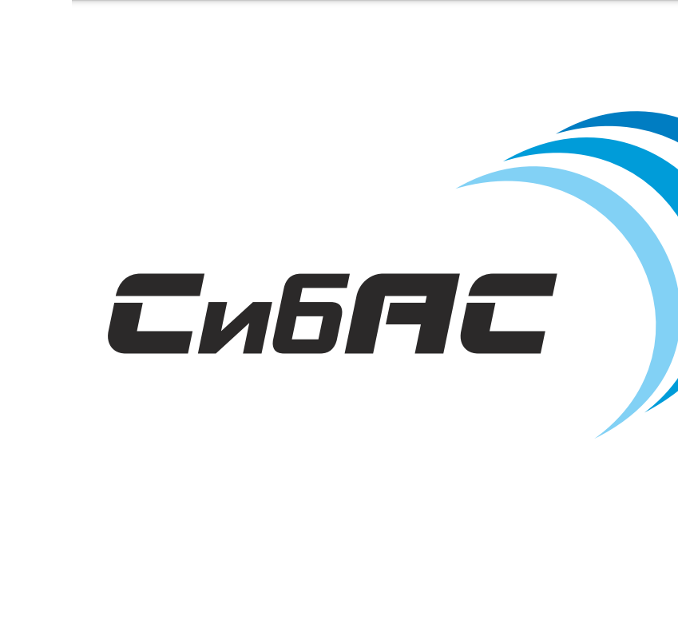
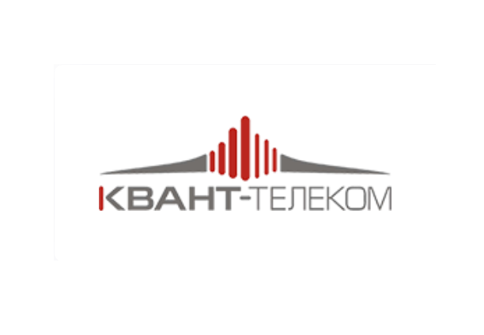
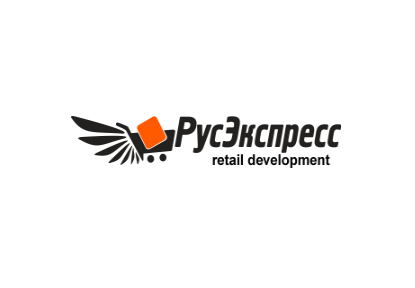
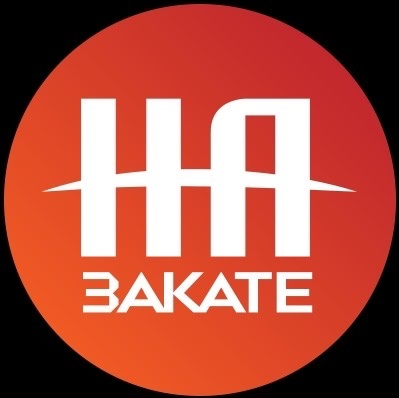
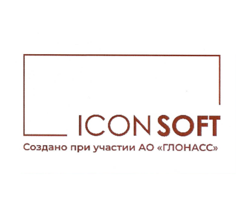
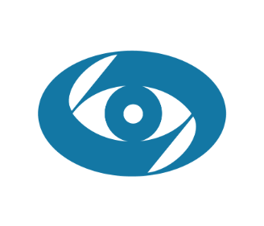

Меня зовут Алексей,
Я Tech Lead и эксперт по AI,
Создаю будущее,
разрабатывая инновационные
AI решения.
Обо мне
"Разрабатываю интеллектуальные системы, которые преобразуют данные в ценные инсайты и открывают новые горизонты возможностей. Искусственный интеллект — это не просто технология, а инструмент, который помогает создавать умные решения для современного мира и формировать будущее."
Мое резюмеНавыки
- Разработка AI-архитектуры
- Машинное обучение и глубокое обучение
- Нейронные сети
- Обработка естественного языка (NLP)
- Компьютерное зрение
- Оптимизация и масштабирование моделей
- Data Science
- Разработка рекомендационных систем
- Проектирование и внедрение AI решений
- Обучение с подкреплением
Опыт работы.
Tech UP - консультационная программа по упаковке технологии
TechLead, Эксперт программы
Май 2024 — по настоящее время
Техническое сопровождение и развитие AI стартапов: руководство проектами в области искусственного интеллекта, координация разработки ПО, принятие ключевых решений для создания эффективной AI-архитектуры.
Активно занимаюсь разработкой и внедрением архитектуры Data Science проектов, оптимизацией и масштабированием моделей машинного обучения, а также созданием инновационных решений. Технически руковожу и наставляю команду разработчиков, управляя проектами на всех стадиях.
Образование.
Яндекс практикум
Python-разработчик
2020
Прошёл обучение в Яндекс Практикуме (АНО ДПО «Образовательные технологии Яндекса») по программе профессиональной переподготовки «Python-разработчик».
Университет Искусственного Интеллекта
Data Scientist, Разработчик Al
2019
Успешно прошёл обучение по программе курса «Data Science, нейронные сети, машинное обучение и искусственный интеллект».
Рыбинский государственный авиационный технический университет им. П.А. Соловьева, Рыбинск
"Вычислительные машины, комплексы, системы и сети
2005-2009
Высшее образование. По окончании обучения присуждена квалификация инженер по специальности "Вычислительные машины комплексы и сети."
Проекты
Ознакомьтесь с моими последними проектами в сфере искусственного интеллекта. Погрузитесь и узнайте, как технологии превращают идеи в интеллектуальные решения.
-
ООО "СИбАкадемСкан"Система досмотра.
-
АО "КВАНТ-ТЕЛЕКОМ"Безопасный город.
-
Онлайн гипермаркет "РусЭкспресс"Разработка модели для задачи NER(NLP).
-
Ток-шоу "На Закате"Нейроведущий.
-
ООО "АЙКОН СОФТ"Классификация экстренных вызовов и звуков с ИИ.
-
МНТК "Микрохирургия глаза"Компьютерное зрение для кератопластики.
Система досмотра.
Основная цель проекта — повышение безопасности в общественных местах (аэропорты, таможенные посты) за счет автоматизации процесса досмотра и уменьшения человеческого фактора.
Безопасный город
Цель проекта "Безопасный город от Квант-Телеком" заключалась в разработке и интеграции программного обеспечения для мониторинга и обеспечения безопасности в городской среде с использованием технологий компьютерного зрения. Проект был направлен на автоматическое обнаружение и анализ потенциальных угроз, таких как скопление людей, ДТП, падения и другие опасности, с целью повышения уровня безопасности и оперативности реагирования в городской инфраструктуре.
Распознавания именованных сущностей (NER)
Цель проекта заключалась в разработке модели для задачи распознавания именованных сущностей (NER) в области обработки естественного языка (NLP) для компании Онлайн-гипермаркет "РусЭкспресс". Модель была предназначена для обработки тестовых данных и выявления ключевых сущностей, таких как имена товаров, бренды и характеристики, с целью повышения эффективности обработки и анализа информации в рамках компании.
Нейроведущий.
Целью данного проекта является разработка и интеграция искусственного интеллекта (ИИ) на базе ChatGPT для участия в телевизионной программе "На Закате" в роли ведущего. ИИ должен быть способен вести беседу с настоящими ведущими и отвечать на их вопросы, создавая естественную и непринужденную атмосферу для зрителей.
Классификация экстренных вызовов и звуков с ИИ
Мы создали нейронную сеть для автоматизации обработки экстренных звонков, чтобы помочь операторам быстро и точно оценивать ситуацию. Система автоматически анализирует аудиозаписи в реальном времени и за секунды выдает рекомендации, значительно упрощая работу операторов, Это решение позволяет создавать эффективную и надежную систему для автоматизированной обработки вызовов, улучшая скорость реагирования в критических ситуациях.
Компьютерное зрение для кератопластики
Цель проекта заключается в создании системы, которая повышает точность и эффективность операций кератопластики за счет автоматизации процесса визуализации шовной фиксации.
 Овчинников Константин Леонидович,
Директор ООО "Айдиго"
Овчинников Константин Леонидович,
Директор ООО "Айдиго"
Oт имени ООО "Айдиго" хочу поблагодарить вас за реализацию проекта "Разработка модели для автоматизации — построения — логистических маршрутов на основе исторической базы данных составления маршрутов, а так же базы данных трекинга транспорта" При работе над проектом студенты УИИ продемонстрировали высокий уровень знаний в области искусственного интеллекта, отличные навыки программирования и креативный подход в решении поставленной задачи. При реализации проекта создана программа, которая имеет удобный интерфейс, создает оптимальные маршруты развоза грузов, визуализирует созданные маршруты. Проект реализован за короткий срок, от даты постановки задачи до её исполнения прошло всего три месяца, что говорит о высоком уровне подготовки студентов и актуальности образовательной программы университета.
Свяжитесь со мной
Буду рад вашим сообщениям. Есть вопрос или хотите поговорить о мире технологий, искусственного интеллекта и творчества? Пишите, буду рад пообщаться.